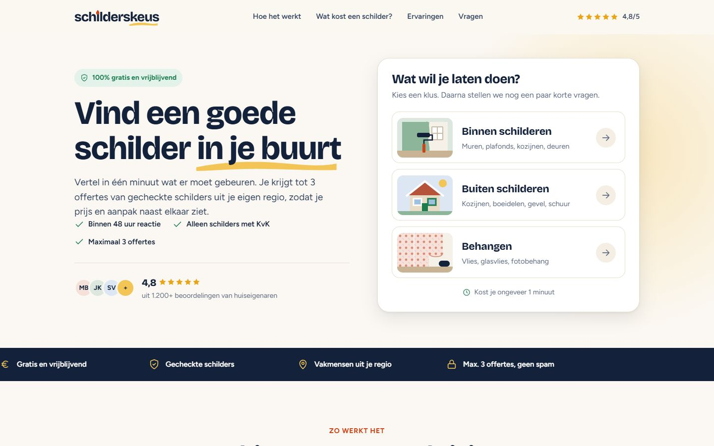
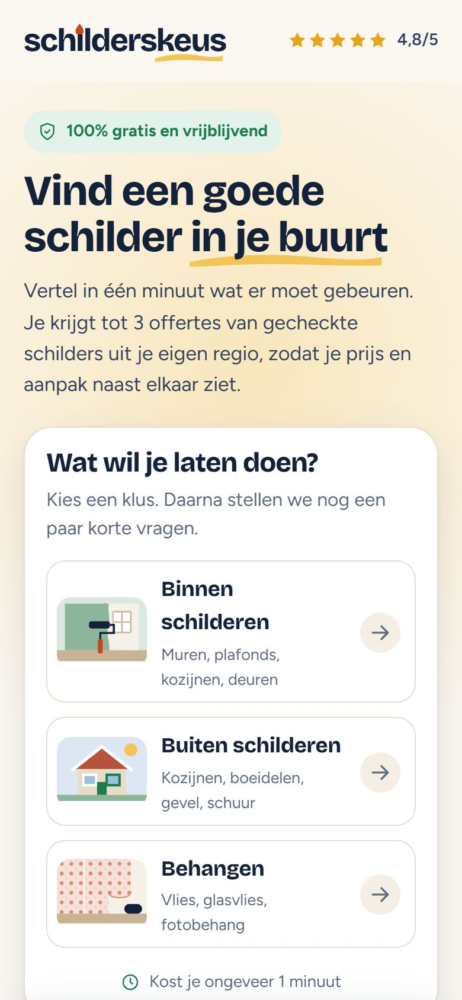
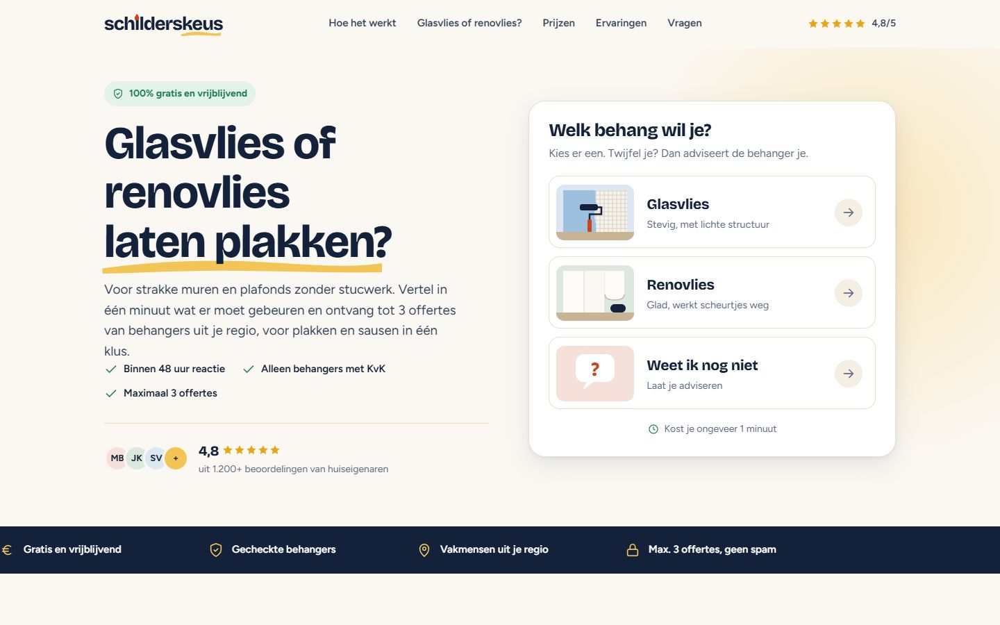
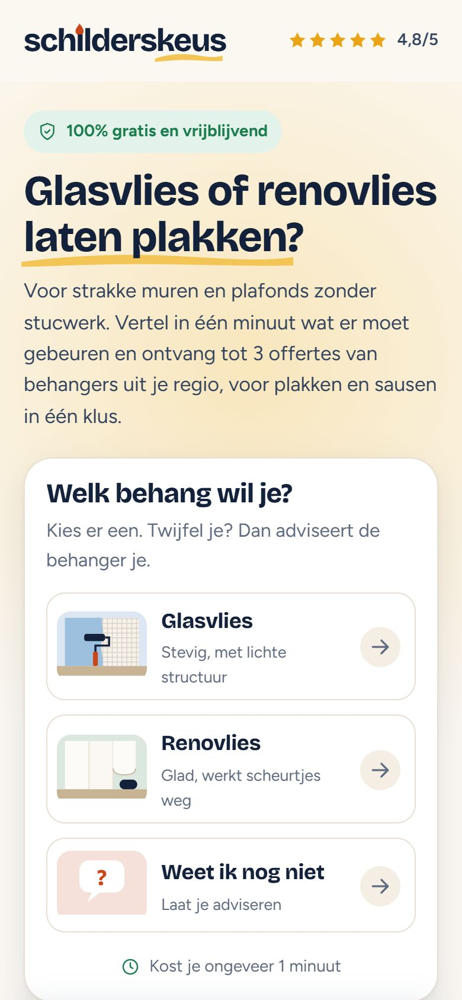
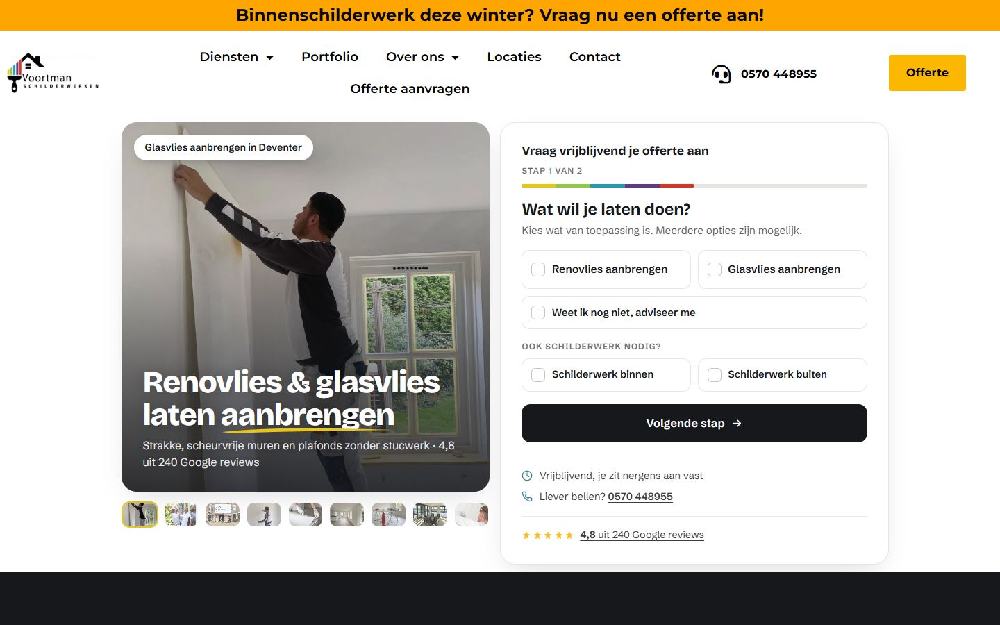
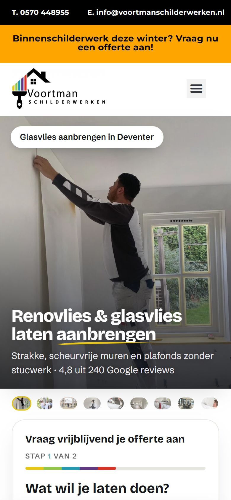

Deze preview is verlopen.
Drie salespages, vier zoekcampagnes, twee Performance Max-campagnes en één Meta-campagne. Zo ziet alles eruit voordat het live gaat. Alle beelden zijn echte projectfoto's van Voortman, zonder logo.
Elke campagne stuurt naar één van deze pagina's. Schilderskeus vergelijkt offertes voor schilderwerk en voor glasvlies of renovlies. De renovliespagina is van Voortman zelf.


Schilder nodig? Vertel in één minuut wat er moet gebeuren en ontvang tot 3 offertes uit je regio.
schilderskeus.nlOpen de pagina

Voor strakke muren en plafonds zonder stucwerk. Tot 3 offertes voor plakken en sausen in één klus.
schilderskeus.nl/behangenOpen de pagina

Strakke, scheurvrije muren en plafonds zonder stucwerk, door eigen vakmensen. Met de offertewizard.
voortmanschilderwerken.nl/renovliesbehangOpen de paginaAlles komt in het Google Ads-account van Voortman, in de regio Deventer, Apeldoorn en Zutphen. De budgetten zijn een voorstel om mee te starten.
| Campagne | Kanaal | Landingspagina | Per dag | Per maand |
|---|---|---|---|---|
| Renovlies & Glasvlies · SpecifiekMensen die renovlies of glasvlies willen laten aanbrengen | Google Zoeken | voortmanschilderwerken.nl/renovliesbehang | € 20 | ± € 610 |
| Renovlies & Glasvlies · BreedBrede termen, alleen in de regio | Google Zoeken | voortmanschilderwerken.nl/renovliesbehang | € 10 | ± € 305 |
| Schilder vergelijkenMensen die een schilder of offerte zoeken | Google Zoeken | schilderskeus.nl | € 15 | ± € 455 |
| Behang vergelijkenGlasvlies en renovlies laten plakken | Google Zoeken | schilderskeus.nl/behangen | € 15 | ± € 455 |
| PMax · Renovlies & GlasvliesYouTube, Shorts, Gmail, Discover, websites en Zoeken | Performance Max | voortmanschilderwerken.nl/renovliesbehang | € 10 | ± € 305 |
| PMax · SchilderskeusOffertes vergelijken, zelfde kanalen | Performance Max | schilderskeus.nl | € 10 | ± € 305 |
| Meta · Glasvlies of renovliesFacebook en Instagram: feed, Stories en Reels | Meta | schilderskeus.nl/behangen | € 15 | ± € 455 |
| Totaal als alles draait | € 95 | ± € 2.890 |
Per maand = per dag × 30,4. Google kan op een dag tot twee keer het dagbudget uitgeven, maar over de maand niet meer dan dit.
Wie zoekt op "schilder deventer" of "renovlies laten aanbrengen" heeft de klus al in zijn hoofd. Met deze campagnes staan we bovenaan.
Mensen die het willen laten doen.
| Zoekterm | Volume | Klik |
|---|---|---|
| renovlies behang aanbrengen | 1.000 | €1,00 |
| renovlies behanger | 500 | €0,70 |
| renovlies behangen | 450 | €2,00 |
| renovlies laten behangen | 350 | €2,50 |
| renovlies behang laten aanbrengen | 350 | €2,50 |
| glasvliesbehang aanbrengen | 200 | €0,25 |
| renovlies laten aanbrengen | 150 | €3,00 |
| glasvlies behangen | 80 | €0,60 |
Brede termen met veel volume, alleen in de regio Deventer, Apeldoorn en Zutphen.
| Zoekterm | Volume | Klik |
|---|---|---|
| renovlies behang | 13.000 | €0,80 |
| renovlies | 7.000 | €0,70 |
| glasvliesbehang | 2.500 | €0,60 |
| glasvlies behang | 500 | €0,35 |
| glasvlies | 400 | €0,25 |
Mensen die een schilder zoeken of offertes willen vergelijken. 30 km rond Deventer.
| Zoekterm | Volume | Klik |
|---|---|---|
| schilder deventer | 400 | €2,50 |
| schilder apeldoorn | 300 | €1,70 |
| schildersbedrijf apeldoorn | 250 | €1,30 |
| offerte schilderwerk | 200 | €4,50 |
| schilders vergelijken | 150 | €1,90 |
| schilder zutphen | 100 | €1,00 |
| schilder raalte | 100 | €1,00 |
| schilder twello | 100 | €1,50 |
| schildersbedrijf deventer | 100 | €1,50 |
| schilder offerte | 70 | €4,00 |
| schilder in de buurt | 70 | €2,00 |
Naar schilderskeus.nl
Mensen die glasvlies of renovlies willen laten plakken. 30 km rond Deventer.
| Zoekterm | Volume | Klik |
|---|---|---|
| renovlies | 7.000 | €0,70 |
| renovlies plafond | 100 | €0,80 |
| glasvlies behangen | 80 | €0,60 |
| glasvlies aanbrengen | 40 | €0,70 |
| renovlies laten plakken | – | – |
| glasvlies laten plakken | – | – |
Advies: haal de algemene termen zoals "behanger" en "behanger deventer" uit deze campagne. Die trekken ook mensen met gewoon behang, en dat doet Voortman niet.
Bron: Ahrefs, Nederland, oktober 2026. "–" = te weinig data. Klikprijzen zijn een schatting; de echte prijs bepaalt de veiling.
Performance Max laat dezelfde advertentie zien op YouTube, in Shorts, Gmail, Discover, op websites en in Zoeken. Google kiest per persoon het beste beeld en de beste tekst. Er is geen webshop, dus geen Shopping: het doel is een offerteaanvraag. Daarom moet de meting van aanvragen eerst goed staan.
Eén campagne op Facebook en Instagram, alleen voor schilderskeus.nl/behangen. Mensen met scheurtjes in het plafond of oude muren zoeken nog niet actief. Met beeld laten we zien hoe strak het kan worden. Daarna vragen ze in één minuut offertes aan.
Jullie feedback op de advertenties, teksten en budgetten. Wij verwerken die.
Aanvragen meten op schilderskeus.nl, /behangen en de renovliespagina, in Google Ads en met de Meta-pixel.
De zoekcampagnes, de twee Performance Max-campagnes en Meta gaan aan.
Kosten per aanvraag per campagne. Meer budget naar wat aanvragen oplevert.
Zonder gemeten aanvragen weet Google of Meta niet wie hij moet zoeken. Eerst de conversie "aanvraag verstuurd" instellen, dan pas starten.
Op schilderskeus.nl staat bij Behangen nog "vlies, glasvlies, fotobehang". Voortman doet alleen glasvlies en renovlies. Advies: "fotobehang" weghalen.
Alle advertentiebeelden zijn echte projectfoto's van Voortman, zonder logo of bedrijfsbus in beeld. De video's zijn dezelfde foto's met een rustige beweging. In de Schilderskeus-advertenties staat nergens de naam Voortman.
Schilderskeus en Voortman bieden op deels dezelfde renovlies- en glasvliestermen. Binnen één account toont Google per zoekopdracht maar één van de twee. Dat is zo bedoeld.